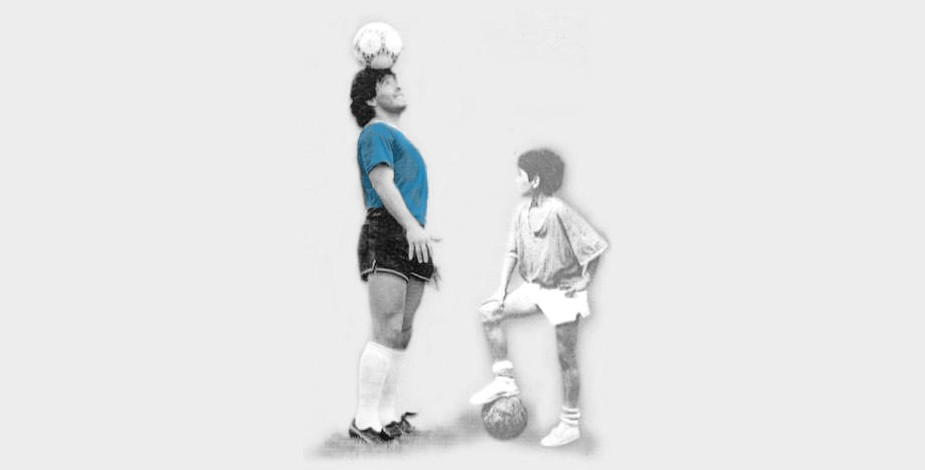

BIENVENIDOS AL SITIO DEL 10
Futbolista argentino, uno de los más grandes de la historia, comparado a menudo con el legendario Pelé. Si bien su habilidad con el balón y su depurada técnica igualaron la del brasileño, la trayectoria de Maradona fue mucho más irregular: su carácter difícil, los problemas de salud y la adicción a las drogas malograron parte de su carrera, pero no impidió que su genialidad brillase en numerosas ocasiones. Tras ganar en 1979 el campeonato mundial juvenil con la selección de su país y triunfar dos años después en el Boca Juniors, inició un periplo europeo que lo llevó al F.C. Barcelona (1982-84), el Nápoles (1984-91) y el Sevilla (1992-93). De regreso a Argentina jugó en el Newell's Old Boys y en el Boca Juniors antes de retirarse en 1997. Con la selección argentina participó en cuatro mundiales y se alzó con el título mundial en el de México (1986), en el que tuvo una portentosa e inolvidable actuación.
